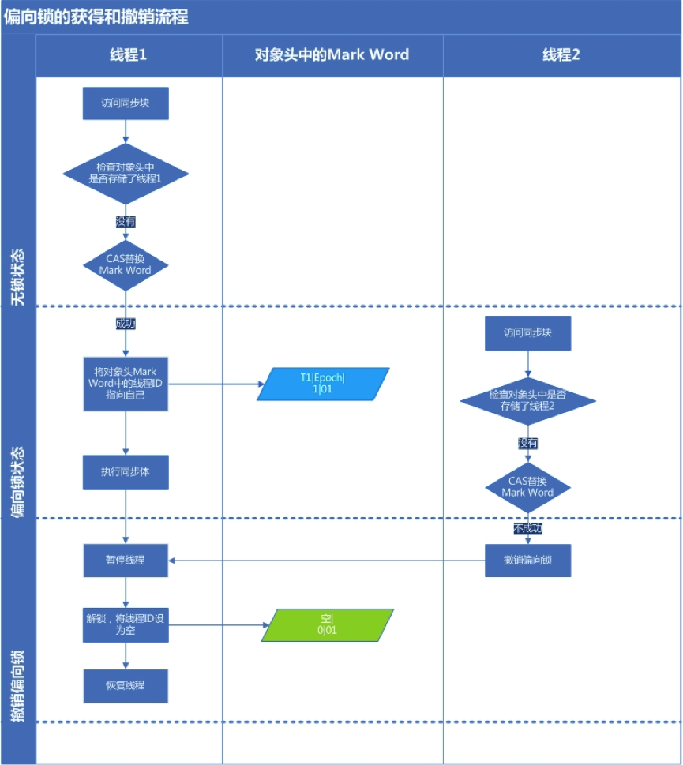

Synchronized
一、为什么使用Synchronized
- 在并发编程中存在线程安全问题，主要原因有：
-
1、存在共享数据；
2、多线程操作共享数据。
关键字Synchronized可以保证在同一时刻，只有一个线程可以执行某个方法或者某个代码块，同时 Synchronized可以包含保证一个线程的变化可见，即可以代替 Volatile。
二、应用方式
Java中每一个对象都可以作为锁，这是 Synchronized 实现同步的基础。
-
1. 普通同步方法(实例方法)，锁是当前实例对象，进入同步代码钱需要获取当前实例的锁；
-
2. 静态同步方法，锁是当前类的 class 对象，进入同步代码前需要获得当前类对象的锁；
-
3. 同步方法块，锁是括号里面的独享，对给定对象加锁，进入同步代码块前需要获取给定对象的锁。
三、实现原理
从 JVM 规范中可以看到 Synchronized 的实现原理：JVM 基于进入和退出 Monitor 对象来实现代码块的同步。
monitorenter 指令是在编译后插入到同步代码块的开始位置，而 monitorexit 指令是插入到方法结束处和异常处，JVM 要保证每一个 monitorenter 必须有对应的 monitorexit 与之配对。任何对象都有一个 monitor 与之关联，当且一个monitor被持有后，它将处于锁定状态。线程执行到 monitorenter指令时，将会尝试获得对象所对应的 monitor 的所有权，即尝试获取对象的锁。
线程进入与退出 monitor:
-
线程执行 monitorenter 指令的过程:
-
1：如果 momnitor 的进入数为0，则该线程进入 monitor，然后将 monitor的进入数设置为1，该线程即为 monitor 的拥有者；
-
2：如果线程已经占有该 monitor，只是重新进入，则进入 monitor 的进入数加1；
-
3：如果其他线程占用了 monitor，则该线程进入阻塞状态，直到 monitor 的进入为0，再重新尝试获取 monitor 的所有权。
-
-
线程执行monitorexit 指令的过程：
-
1：执行monitorexit的线程必须是锁对象对应的 monitor 的 拥有者。 monitorexit 指令执行时，monitor 的进入数会减 1，如果减 1 后进入数为 0，那这个线程就退出 monitor,不再是这个 monitor 的拥有者。其他被这个monitor阻塞的线程可以尝试去获取这个 monitor 的所有权。
-
2：如果其他线程已经占用了monitor，则该线程进入阻塞状态，直到monitor的进入数为0，再重新尝试获取monitor的所有权。
-
四、对象的锁
synchronized 实现同步的关键就是锁，而对象的锁就是存在 Java 对象头里的。如果对象是数组类型，则 32 位虚拟机用 3 个字宽存储对象头；如果对象是非数组类型，则用 2 字宽存储对象头。在 32 位虚拟机中，1字宽 = 4字节 = 32 bit。
| 长度 | 内容 | 说明 |
|---|---|---|
32/64 bit |
Mark Word |
存储对象的 hashCode 或锁信息等 |
32/64 bit |
Class Metadata address |
存储到对象类型数据的指针 |
32/64 bit |
Array length |
数组的长度（如果当前对象是数组） |
Java 对象头里的 Mark Word 默认存储对象的 hashCode、分代年龄和锁标记位。32位 JVM 的 Mark Word 的默认存储结构如下：
| 锁状态 | 25 bit | 4 bit | 1 bit 是否是偏向锁 | 2 bit 锁标志位 |
|---|---|---|---|---|
无锁状态 |
对象的hashCode |
对象的分代年龄 |
0 |
01 |
在运行期间， Mark Word 里存储的数据会随着锁标志位的变化而变化。 Mark Word 可能变化为存储以下 4 中数据：
锁状态 |
25bit |
4bit |
1bit |
2bit |
|
23bit |
2bit |
是否是偏向锁 |
锁标志位 |
||
轻量级锁 |
指向栈中锁记录的指针 |
00 |
|||
重量级锁 |
指向互斥量(重量级锁)指针 |
10 |
|||
GC标记 |
空 |
11 |
|||
偏向锁 |
线程ID |
Epoch |
对象分代年龄 |
1 |
01 |
锁状态 |
25 bit |
31 bit |
1 bit |
4 bit |
1 bit |
2bit |
cms_free |
分代年龄 |
偏向锁 |
锁标志位 |
|||
无锁 |
unused |
hashCode |
0 |
01 |
||
偏向锁 |
ThreadId(54 bit);Epoch(2bit) |
1 |
01 |
|||
五、锁的升级与对比
Synchronized 实现线程安全的主要原理就是获得对象锁。而获得锁和释放锁又会消耗大量的性能资源。所以为了减少性能消耗，Java SE 1.6 就引入了"偏向锁"和"轻量级锁"。在 SE 1.6 中，锁一共有 4 中状态：无锁状态、偏向锁状态、轻量级锁状态和重量级锁状态。这几个状态会随着竞争情况而逐渐升级，但是需要注意的是锁可以升级但是不能降级，也就是说一个锁一旦升级为轻量级锁后就不能降级为偏向锁。这种能升级但是不能降级的策略是为了提高获得锁和释放锁的效率。
1、偏向锁
在大多数情况下，锁不仅不存在多线程竞争，而且总是有同一线程多次获得，所以为了让线程获得锁的代价更低而引入了偏向锁。当一个线程访问同步代码块并获取锁时，会在对象头和栈针中的锁记录里面存储偏向的线程ID，以后该线程在进入和退出同步代码块时不需要进行 CAS 操作来加锁和解锁，只需要简单的测试一下对象的 Mark Word 里是否存储指向着当前线程的偏向锁。如果测试成功，则表明线程已经获得了锁；如果测试失败，则需要再测试一下 Mark Word 中偏向锁的表示是否设置成 1(表示当前是偏向锁)：如果没有设置，则使用 CAS 竞争锁；如果设置了，则尝试使用 CAS 将对象头的偏向锁指向当前线程。
1.1 偏向锁的撤销
在偏向锁需要升级为轻量级锁的时候，会进行偏向锁的撤销。偏向锁使用了一种等到竞争出现才释放锁的机制。所以一旦线程获得了对象的偏向锁，如果不存在其他的线程来竞争这个锁，那么获得锁的线程就不会释放该对象的偏向锁。只有在其他线程尝试竞争偏向锁时，持有偏向锁的线程才会释放锁。而偏向锁的撤销，需要等待全局安全点(在这个时间点上没有正在执行的字节码)。 撤销的过场就是先暂停拥有偏向锁的线程，然后检查持有偏向锁的线程是否活着，如果这个线程不处于活动状态，则将对象头设置成无锁状态；如果线程仍然活着，拥有偏向锁的线程会被执行，遍历偏向对象的锁记录，栈中的锁记录和对象头的 Mark Word 要么重新偏向其他线程，要么恢复到无锁或者标记对象不适合作为偏向锁，最后唤醒暂停的线程。
下图展示偏向锁的初始化和撤销过程:
